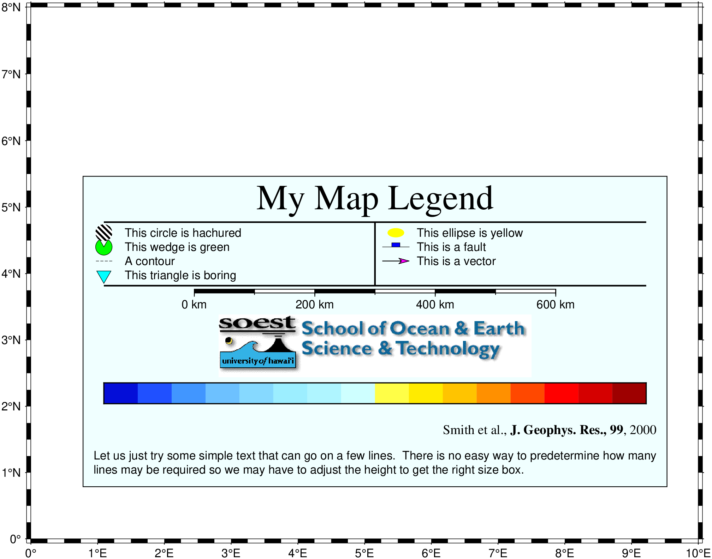

using GMT
makecpt("-Cpanoply -T-8/8 > tt.cpt")
legend((
vspace=-0.25,
header=(text="My Map Legend", font=(24,"Times-Roman")),
hline=(pen=1, offset=0.5),
ncolumns=2,
vline=(pen=1, offset=0),
symbol1=(marker=:circ, size=0.4, dx_left=0.25, fill="p300/12", dx_right=0.75, text="This circle is hachured"),
symbol2=(marker=:ellipse, size=0.4, dx_left=0.25, fill=:yellow, dx_right=0.75, text="This ellipse is yellow"),
symbol3=(marker=:wedge, size=0.4, dx_left=0.25, fill=:green, pen=0.25, dx_right=0.75, text="This wedge is green"),
symbol4=(marker=:fault, size=0.65, dx_left=0.25, fill=:blue, dx_right=0.75, text="This is a fault"),
symbol5=(marker="-", size=0.4, dx_left=0.25, pen=(0.25,:dash), dx_right=0.75, text="A contour"),
symbol6=(marker=:vector, size=0.65, dx_left=0.25, fill=:magenta, pen=0.5, dx_right=0.75, text="This is a vector"),
symbol7=(marker="i", size=0.4, dx_left=0.25, fill=:cyan, pen=0.25, dx_right=0.75, text="This triangle is boring"),
hline2=(pen=1, offset=0.5),
vline2=(pen=1, offset=0),
ncolumns2=1,
map_scale=(lon=5, lat=5, length="600+u+f"),
vspace2=0.13,
image=(width=7.5, fname="@SOEST_block4.png", justify=:CT),
vspacep3=0.13,
colorbar=(name="tt.cpt", offset=0.5, height=0.5, extra="-B0"),
label=(txt="Smith et al., @%5%J. Geophys. Res., 99@%%, 2000", justify=:R, font=(9, "Times-Roman")),
vspace4=0.25,
text1="Let us just try some simple text that can go on a few lines. There is no easy way to predetermine",
text2="how many lines may be required so we may have to adjust the height to get the right size box."
),
region=(0,10,0,8), pos=(paper=(1.25,1.25), width=14, justify=:BL, spacing=1.2),
clearance=(0.25,0.25), box=(pen=0.5, fill=:azure1),
figsize=16, proj=:Mercator, show=true
)